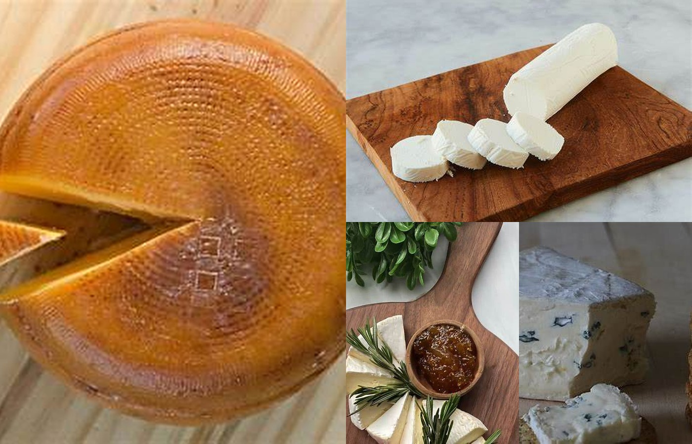
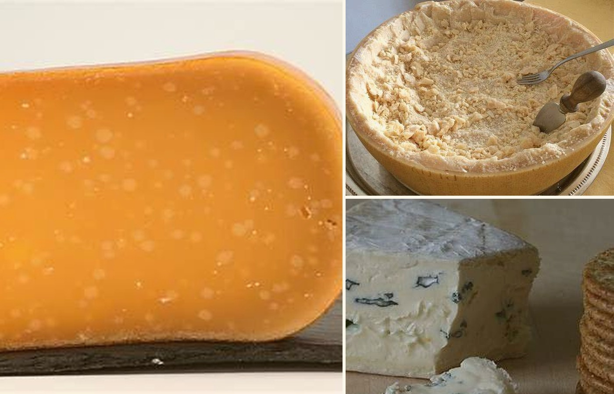

Elaboración artesanal
Productos seleccionados por su origen, proceso y sabor.
Seleccionamos quesos hechos con tiempo, oficio e ingredientes de calidad. Descubre sabores de origen y encuentra el queso ideal para cada ocasión.

Desde sabores suaves y frescos hasta maduraciones más intensas.
Una selección para comenzar a conocer Queso & Sabor.

Trabajamos con productos pensados para conservar su carácter, textura y sabor. La elaboración artesanal pone el foco en el cuidado de cada etapa, desde la leche hasta la maduración.
Productos seleccionados por su origen, proceso y sabor.
Priorizamos calidad, frescura y combinaciones simples.
Una experiencia de compra preparada para despachos a todo el país.
Interfaz clara y pasos de compra fáciles de entender.